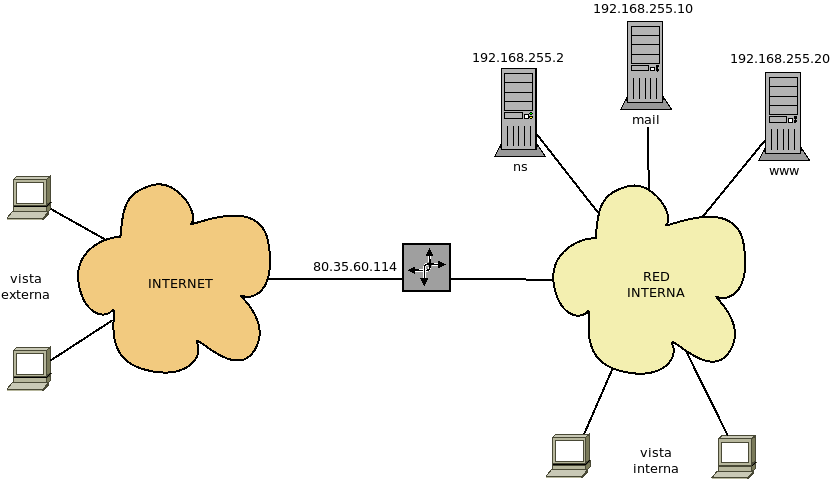

6.2.3. bind¶
El servidor bind es el estándar de facto para el servicio DNS. Está patrocinado por el ISC y permite hacer configuraciones complejas
6.2.3.1. Preliminares¶
Antes de meternos de lleno en la configuración de zonas, es preciso instalar y preparar el servidor.
6.2.3.1.1. Instalación¶
Debian trae su propio paquete para instalar el servidor:
# apt install bind9
La instalación es plenamente funcional:
No hay definida ninguna zona propia (no es servidor autoritario), pero funciona perfectamente como servidor recursivo.
Utiliza para sus consultas recursivas los servidores raíz.
Podemos probar el servidor con host:
$ host www.iescastillodeluna.es localhost
Advertencia
En este caso, tenemos que especificar que queremos usar nuestro
propio servidor, porque no hemos tocado el archivo /etc/resolv.conf.
Recuerde que hay que editar este archivo para indicar qué servidor DNS
desea usarse. A partir de ahora supondremos que se ha
editado este archivo para evitar el tedio de indicar explícitamente que se
está usando nuestor propio bind.
Tenga, además, presente que, si durante sus pruebas alguna de las interfaces
de su servidor tiene configuración dinámica, el cliente DHCP alterará el
contenido de /etc/resolv.conf cada vez que reciba una configuración
de red. Para evitarlo, puede utilizar este truco.
6.2.3.1.2. Archivos de configuración¶
Toda la configuración se encuentra dentro del directorio /etc/bind. El
archivo básico de configuración es named.conf, pero mediante sentencias
include Debian ha dividido sus contenidos en otros dos[1]. Nos
centraremos en los siguientes archivos:
named.conf.optionsDefine algunos parámetros de configuración. Nos interesa fundamentalmente el bloque
forwardersque define los servidores que usará nuestro servidor para realizar búsquedas recursivas. Al encontrarse deshabilitado, recurre directamente a los servidores raíz.named.conf.localEstá destinado a la declaración de las zonas que se definirán en nuestro servidor. Siempre que definamos una zona, deberemos incluir aquí una referencia.
db.emptyEs un archivo que nos sirve como plantilla para la creación de archivos de zona.
6.2.3.1.3. Enjaulamiento¶
El servicio DNS es tristemente célebre por sus repetidos problemas de
seguridad. Por ello, es muy recomendable enjaular el servidor dentro de un
directorio que llamaremos /var/lib/chroot-dns. Comenzemos por parar el
servicio:
# invoke-rc.d bind9 stop
y preparar los directorios necesarios:
# mkdir -p /var/lib/chroot-dns/{etc,dev,var/{cache,run}}
Poblemos ahora dev/ con los archivos especiales que necesita el
servidor:
# mknod -m666 /var/lib/chroot-dns/dev/null c 1 3
# mknod -m666 /var/lib/chroot-dns/dev/random c 1 8
Movemos los directorios necesarios dentro de la jaula:
# mv /etc/bind /var/lib/chroot-dns/etc
# ln -s /var/lib/chroot-dns/etc/bind /etc
# mv /var/cache/bind /var/lib/chroot-dns/var/cache
# ln -s /var/lib/chroot-dns/var/cache/bind /var/cache
# mv /var/run/named /var/lib/chroot-dns/var/run
# ln -s /var/lib/chroot-dns/var/run/named /var/run
Y hacemos propietario al usuario bind de todo el contenido:
# chown -R bind:bind /var/lib/chroot-dns/*
Metemos dentro de la jaula también el registro:
# echo '$AddUnixListenSocket /var/lib/chroot-dns/dev/log' > /etc/rsyslog.d/dns-chroot.conf
# invoke-rc.d rsyslog restart
Por último, para rematar podemos modificar la versión que comunica nuestro
servidor para que un posible atacante no la conozca de antemano. Esto se hace
editando /etc/bind/named.conf.options:
version "3.1416"
Con esto ya podemos indicar al demonio que arranque enjaulado, para lo cual
editamos /etc/default/bind y dejamos las opciones del siguiente modo:
OPTIONS="-u bind -t /var/lib/chroot-dns"
E iniciamos de nuevo el servidor:
# invoke-rc.d bind9 start
6.2.3.1.4. Configuración inicial¶
Básicamente consiste en editar named.conf.options y ajustarlo a nuestro
gusto. No introduciremos demasiadas opciones.
Al comienzo, el archivo contiene una línea:
directory "/var/cache/bind";
que identifica el directorio donde tendremos que almacenar los archivos de definición de las zona que gestionemos. Conviene que lo recordemos.
Más adelante, mediante el bloque forwarders, se puede configurar cómo el servidor hará sus propias consultas recursivas para resolver dominios ajenos. De forma predeterminada, el servidor no hace consultas recursivas (el bloque está comentado), sino que los resuelve utilizando consultas iterativas a partir de los servidores raíz. Para agilizar estas consultas es mejor recurrir a consultas recursivas a otros servidores DNS de internet que las permitan. Por ejemplo[2]:
forwarders { // Servidores de Cloudflare
1.1.1.1;
1.0.0.1;
//194.179.1.100;
};
Por último, como no usaremos DNSSEC debemos dejar la línea:
dnssec-validation no;
Un aspecto muy importante de nuestro servidor y al que tenemos que atender, es si pensamos permitir las consultas recursivas o no. En un servidor local que ofrecerá servicio a las máquinas de la red es obvio que sí. En cambio, si montamos un servidor autoritario público, lo mejor es impedirlas. En el archivo no hay configuración al respecto, así que se usa la predeterminada que es:
recursion yes;
allow-recursion { localnets; localhost; };
que significa que sí se permite, pero sólo a la lista de clientes proporcionada por allow-recursion que es la propia máquina local y las máquinas que pertenecen a las redes a las que directamente esté conectada el servidor.
Advertencia
Por defecto, bind permite a cualquier máquina la transferencia completa de la zona. Puede hacer la prueba con:
$ dig iescastillodeluna.es AXFR
Esto puede no parecernos buena idea, sobre todo si nuestro servidor está expuesto a internet. Para evitarlo:
allow-transfer { none; };
Pero téngase presente que los servidores esclavos deben poder recibir la transferencia de zona. La sentencia anterior lo impide.
6.2.3.1.5. Comprobación¶
Una vez que hayamos hecho una configuración, tenemos distintas herramientas para validarla:
# named-checkconf archivo_configuracion
que comprueba errores en los archivos de configuración como
named.conf.options o named.conf.local. Por otra parte:
# named-checkzone zona archivo_de_zona
comprueba errores en la definición de la zona incluida en el archivo que se
proporciona (nosotros los almacenaremos en /var/cache/bind). Estos
archivos no los hemos visto aún, pero los escribiremos a partir del próximo
epígrafe.
Por supuesto, también podemos iniciar el servidor y consultar los registros en búsqueda de errores, haciendo uso de journalctl. Por ejemplo:
# journalctl -u named -n30
que nos muestra las últimas treinta líneas del registro.
Advertencia
Iniciar (o reiniciar) este servidor no muestra ningún error, aunque lo haya habido y el servidor ni siquiera haya podido arrancar.
6.2.3.1.6. Cacheo¶
Nuestro servidor cachea las resoluciones que realiza, por lo que también es interesante saber cómo manejarlas. Para ello podemos echar mano de la orden rndc. Un primer uso, nos permite eliminar toda la caché:
# rndc flush
aunque podemos restringir la eliminación a un nombre particular:
# rndc flushname www.google.com
o a un dominio y todo su contenido:
# rndc flushtree google.com
También podemos volcar los registros que se encuentran en la caché al archivo
/var/cache/bind/named_dump.db para consultarlos:
# rndc dumpdb -cache
La orden tiene otros muchos más usos. Más adelante indicaremos algunos referentes a las zonas.
6.2.3.2. DNS directo¶
Ya sabemos cómo hacer la configuración inicial de bind y cómo convertirlo en un servidor para consultas recursivas. Nuestra intención a partir de ahora es exponer cómo hacerlo un servidor autoritario para las zonas que decidamos y cómo crear los registros dentro de tales zonas. Para la exposición pongamos que la zona que queremos definir es «iescastillodeluna.es» como venimos haciendo hasta ahora.
En principio, hay dos posibilidades:
Servidor de internet: nuestro servidor DNS resuelve una zona pública, esto es, una zona con máquinas expuestas a internet, por lo que las resoluciones de nombres dirigen a IP públicas. En este caso:
Habremos pagado a un agente registrador para que incluya el registro NS correspondiente en el TLD «es».
El agente registrador es muy probable que nos ofrezca la posibilidad de usar un servidor DNS suyo para gestionar el dominio con lo que nos proporcionará una interfaz web sencilla para añadir, modificar y eliminar registros. En este caso, no tenemos que aprender más: con saber cuáles son y para qué sirven los distintos tipos de registros nos basta. Pero a nosotros no nos interesa este caso, porque buscamos aprender a configurar el servidor DNS, sino aquel otro en que nosotros mismos lo montamos.
Necesitamos indicarle al agente registrador que refiera un servidor de nuestra propiedad que disponga de IP pública como servidor DNS en el TLD. Este será el servidor DNS que configuremos. A menos que este servidor DNS disponga de un nombre de máquina resoluble, además deberá incluirse un glue record, ya que el servidor tendrá un nombre del propio dominio «iescastillodeluna.es».
Habitualmente, no se nos obligará a que haya redundancia de servidores, así que necesitaremos al menos otro servidor con IP pública que, como en el punto anterior, deberemos facilitar al agente registrador para que pida su adición al TLD «es». Este servidor a diferencia del primero, será un servidor esclavo, así que tendremos que definirlo de distinta forma.
Lo más lógico es que el servidor no se dedique a hacer resoluciones recursivas para terceras máquinas (véase cómo limitar la recursión).
No podemos definir resolución inversa, ya que las redes públicas pertenecen a ISP o grandes empresas de servicios en la nube. Si necesitamos que alguna de nuestras IPs públicas resuelva a un nombre determinado necesitaremos contactar con el ISP o la empresa para que haga tal cambio en sus servidores DNS.
Servidor interno: en este caso montamos el servidor para dotar de nombres a las máquinas de una red privada:
No necesitamos que el dominio exista fuera de nuestra propia red, por lo que no nos es necesario registrarlo.
No necesitamos redundancia de servidores con lo que podríamos no tener que configurar ningún servidor esclavo.
El servidor sí realizará resoluciones recursivas, ya que las máquinas de la red lo usarán también para resolver nombres de servidores externos.
La red privada sí será nuestra, por lo que haremos resolución inversa.
Como existirá un servicio DHCP, es probable que nos interese un DNS dinámico, esto es, que las máquinas que reciben una configuración IP también reciban un nombre automático.
Por supuesto, también cabe la posibilidad de que tengamos que hacer ambas cosas: un servidor que dispone de una interfaz pública con la cual implementamos el primer caso; y una interfaz interna con la cual implementamos la segunda posibilidad.
6.2.3.2.1. Definición de zona¶
Para definir una zona debemos hacer dos cosas:
Declararla en
named.conf.local.Definirla propiamente en su archivo correspondiente.
Para lo primero debemos añadir un bloque a named.conf.local:
zone "iescastillodeluna.es" {
type master;
file "db.iescastillodeluna.es";
};
En él definimos el servidor como maestro para la zona e indicamos cuál es el
archivo en el que declararemos los registros que la componen. Como no indicamos
ruta, el archivo debe ubicarse en /var/cache/bind.
Ahora entramos de lleno en la configuración propiamente de la zona. Para ello,
lo mejor es copiar la plantilla db.empty:
# cp /etc/bind/db.empty /var/cache/bin/db.iescastillodeluna.es
y editarla para dejarla más o menos así:
;
; Zona IESCASTILLODELUNA.ES
;
@ IN SOA ns1 hostmaster (
1 ; Serial
604800 ; Refresh
86400 ; Retry
2419200 ; Expire
86400 ) ; Negative Cache TTL
;
@ IN TXT "Ejemplo de definición de la zona IESCASTILLODELUNA.ES"
NS ns1
NS ns2
MX 10 mail
ns1 IN A 80.80.80.81
ns2 IN A 80.80.80.91
mail IN A 194.179.100.201
;
$TTL 300
;
smtp IN CNAME mail
pop3 IN CNAME mail
imap IN CNAME mail
www IN A 80.80.80.80
ftp IN CNAME www
* IN CNAME www
Sin entrar en el detalle de cada registro (porque esto se hizo al explicarlos):
Como se está definiendo la zona «iescastillodeluna.es», los nombres que no acaban en punto añaden este dominio automáticamente.
No hay ningún registro con un TTL específico, de modo que el TTL viene dado por el especificado en el registro SOA. Sin embargo, hacia la mitad del archivo existe la directiva:
$TTL 300
que afecta a todos los registros definidos a continuación[3].
El ejemplo define una zona de máquinas públicas, no un dominio privado, y eso está en consonancia con que se definan dos servidores de dominio para la zona: «ns1» y «ns2». El primero debe de ser el servidor primario, puesto que así se deduce del registro SOA y el segundo un servidor esclavo. De lo que se deduce que estamos escribiendo este archivo en la máquina «ns1».
Los nombres de los servidores DNS pertenecen al propio dominio, lo que provoca que existan dos registros A que indiquen cuál es su dirección IP y que deduzcamos que en el TLD superior existan, además de los dos registros NS que provocan la delegación, dos glue records con sus direcciones IP. Por consiguiente, en el TLD «es», que no controlamos, pero a cuyo TTL hemos pagado a través de un agente para que lo haga, habrá estos registros:
iescastillodeluna.es. IN NS ns1.iescastillodeluna.es. iescastillodeluna.es. IN NS ns2.iescastillodeluna.es. ; Estos son los glue records ns1.iescastillodeluna.es. IN A 80.80.80.81 ns2.iescastillodeluna.es. IN A 80.80.80.91
Recuerdese, no obstante, que esto no es obligatorio. El servidor DNS puede tener un nombre en un dominio distinto. Por ejemplo, en nuestro servidor la definición dentro de
db.iescastillodeluna.espodría haber sido ésta:@ IN NS dns1.example.org. NS dns2.example.org.
En este caso, el TLD superior, obviamente, no tendría glue records, ya que las direcciones IP de esos dos servidores estarían recogidas en la definición de la zona «example.org».
Hay otro aspecto importante de este registro. Ya hemos deducido a través del registro SOA que «n1» es la máquina en la que estoy escribiendo estos registros. Pero, entonces, ¿qué máquina es «n2» que también es servidor de nombres según el registro? «n2» es un servidor esclavo que configuraremos más adelante.
Hay definido un servidor para gestionar el correo del dominio («mail»).
Hay un registro TXT bastante inútil que únicamente ilustra su uso: los registros TXT suelen incluirse con algún fin específico para que algún programa los consulte y haga uso de información.
Hay un registro comodín:
* IN CNAME wwwque implica que cualquier nombre (excepto los definidos implícitamente) sean alias de «www». Por eso «smtp», por ejemplo, es alias de «mail». Estos comodines no se limitan a este tipo de registros: también pueden definirse con MX, A, SRV, etc.
¿Qué ocurriría si la zona se definiera para una red privada? En realidad, no habría muchos cambios:
No se habría necesitado registrar el dominio en el TLD «es».
Las IP que aparecen en el archivo deberían ser privadas.
Probablemente nos sobraría el servidor esclavo.
También probablemente nos gustaría implementar la resolución inversa.
Antes de acabar, podemos retomar la orden rndc, porque tambien nos sirve para que bind actualice la zona después de haber hecho un cambio en el archivo sin necesidad de reiniciar el servidor:
# rndc reload iescastillodeluna.es
# rndc reload
La primera orden nos permite recargar exclusivamente la zona «iescastillodeluna.es», mientras que la segunda recarga todas las zonas que gestione el servidor.
6.2.3.2.2. Delegación¶
La delegación se produce cuando un servidor DNS delega en otro (u otros) una porción de su espacio de nombres. Por ejemplo, la zona «sede1.iescastillodeluna.es» la desgajamos de «iescastillodeluna.es» para gestionar mediante un servidor distinto. La delegación es, de hecho, la base de la organización jerárquica del servicio.
Para delegar tenemos que tocar tanto la configuración del propio servidor como la definición del archivo de zona.
- Servidor delegante
Necesitamos hacer dos cosas:
Modificar ligeramente el bloque de la zona en archivo
named.conf.local:zone "iescastillodeluna.es" { type master; file "db.iescastillodeluna.es"; forwarders {}; };
La línea debe añadirse, porque la zona «sede1.iescastillodeluna.es» no está definida en este servidor, y, consecuentemente, si se pregunta a este servidor alguna resolución del subdominio recurrirá a los servidores definidos en el bloque
forwarders. Con esta línea, lo evitamos.Incluir en el archivo de zona «iescastillodeluna.es» la delegación de la subzona añadiendo estas líneas:
; ; Delegación de la zona sede1.iescastillodeluna.es ; $ORIGIN sede1.iescastillodeluna.es. @ IN NS ns1 NS ns2 ; Esto son glue records ns1 IN A 110.111.112.113 ns2 IN A 110.111.112.114
En el código hemos usado otra directiva $ORIGIN que nos permite cambiar el dominio de referencia que usan los nombres: así nos hemos ahorrado incluir la palabra «sede1» en todos ellos.
Nótese que seguimos utilizando como nombres del servidor, nombres del propio dominio que gestionan por lo que debemos incluir los glue records.
- Servidor delegado
En principio no hay que hacer nada especial que no sea definir la zona «sede1.iescastillodeluna.es» tal como ya explicamos para «iescastillodeluna.es».
Ahora bien, si este servidor lo pretendemos usar también para realizar búsquedas recursivas y el dominio superior («iescastillodeluna.es» en este caso) es un dominio privado que no está registrado en el TLD «es», entonces debemos buscar la forma de forzar que consulte al servidor delegante el dominio «iescastillodeluna.es». La forma más sencilla es usar a dicho servidor como forwarder. Por tanto, bastará con modificar el bloque en
named.conf.options:forwarders { ip.del.dns.superior; }
6.2.3.2.3. Servidor esclavo¶
La configuración de un esclavo tiene dos partes diferenciadas:
Declararlo como tal en el servidor maestro.
Configurarlo en sí el servidor esclavo.
- Servidor maestro
Para que un servidor maestro notifique cambios en la zona a un servidor esclavo, basta con que éste este referido en un registro NS en el archivo de zona. En nuestro ejemplo, referimos una máquina «ns2»:
@ IN NS ns1 NS ns2
así que hemos complido con ello.
Nota
Existe una directiva also-notify que podemos incluir en el bloque zone del archivo
named.conf.local, que nos permite referir una lista de máquinas a las que notificar los cambios:zone "iescastillodeluna.es" { type master; file "db.iescastillodeluna.es"; also-notify { 10.10.10.10; 10.10.10.11; }; };
Sin embargo, si se encuentra la máquina referida a través del registro NS es redundante; y, si no lo está, tal servidor sería un servidor esclavo fantasma, que no aparecería como servidor autoritario cuando un cliente hiciera la consulta:
$ host -tns iescastillodeluna.es
lo cual no parece muy recomendable.
Advertencia
Al servidor esclavo le debe estar permitida la transferencia completa de la zona. Si la hemos prohibido de modo universal con
allow-transfer { none; };, entonces tendremos que habilitarla expresamente para la zona:zone "iescastillodeluna.es" { type master; file "db.iescastillodeluna.es"; allow-transfer { 80.80.80.91; }; // Esta es la IP de ns2, el esclavo. };
- Servidor esclavo
La configuración del servidor esclavo («ns2» en nuestro caso) es muy sencilla, ya que no hay que crearle ningún archivo de definición de zona. Basta con declarar en él que «iescastillodeluna.es» es una zona que él gestionará como esclavo e indicarle cuál es el servidor maestro. Consecuentemente, basta con añadir a
named.conf.options:zone "iescastillodeluna.es" { type slave; masters { 80.80.80.81; }; // Esta es la IP de ns1, el maestro. };
6.2.3.2.4. Vistas¶
Una vista es la perspectiva que el servidor DNS ofrece de sí a los clientes que lo consultan. Por ejemplo, si tuviéramos un servidor con dos interfaces, una externa a la que se puede acceder desde internet, y una interna para la red local, podría interesarnos proporcionar diferentes resoluciones.
En este caso, para el exterior todos los nombres de todos los servidores deben
resolverse con la misma dirección IP: 80.35.60.114. En cambio, para los
clientes de la red interna cada servidor tiene una IP privada distinta.
Servidor |
Vista externa |
Vista interna |
|---|---|---|
ns.iescastillodeluna.es |
80.35.60.114 |
192.168.255.1 |
mail.iescastillodeluna.es |
80.35.60.114 |
192.168.255.10 |
www.iescastillodeluna.es |
80.35.60.114 |
192.168.255.20 |
bind permite definir múltiples vistas para las cuales no sólo se pueden cambiar las definiciones de los registros, sino también la configuración. Por ejemplo, en una vista se pueden admitir las consultas recursivas, pero en otra no.
Una vista se define con la siguiente estructura:
view "nombre_de_la_vista" {
// directivas que definan quién ve esta vista.
// opciones particulares de la vista.
// bloques "zone" pertinentes...
}
Hay que tener en cuenta, además, que cuando se definen vistas, no pueden haber bloques zone definidos fuera de ella.
Para ilustrarlo, definamos en nuestra configuración las dos vistas anteriores,
Para ello debemos hacer primero unos cambios en named.conf:
include "/etc/bind/named.conf.options";
//include "/etc/bind/named.conf.local";
//include "/etc/bind/named.conf.default-zones";
include "/etc/bind/named.conf.view.interna";
include "/etc/bind/named.conf.view.externa";
Con ello cargamos dos archivos: uno nos servirá para definir la vista interna y otro la externa. Es importante, además, tener presente que bind lee en orden los bloques y aplica el primero con el que la solicitud concuerde, desechando los que se encuentran a continuación.
El primer archivo es éste:
view {
match-clients { localnets; localhost; };
recursion yes;
zone "iescastillodeluna.es" {
type master;
file "interna/db.iescastillodeluna.es";
}
include "/etc/bind/named.conf.default-zones";
}
Y éste el segundo:
view {
match-clients { any; };
recursion no;
zone "iescastillodeluna.es" {
type master;
file "externa/db.iescastillodeluna.es";
}
//include "/etc/bind/named.conf.default-zones";
}
Esta configuración implica lo siguiente:
Quiénes ven cada vista se logra a través de la cláusula match-clients, que comprueba cuál es la dirección IP de origen de las consultas.
Las máquinas de redes directamente conectadas verán la vista interna, mientras que el resto la externa. Nótese que si la red local fuera más compleja y existieran otras redes no directamente conectadas al servidor, entonces no bastaría localnets y habría que enumerarlas explícitamente. Lo más limpio sería utilizar un bloque acl en
named.conf:include "/etc/bind/named.conf.options"; acl "privadas" { 10.0.0.0/8; 172.16.0.0/12; 192.168.0.0/16; }; include "/etc/bind/named.conf.view.interna"; include "/etc/bind/named.conf.view.externa";
y usar esta definición en las cláusulas match-clients:
match-clients { privadas; localhost; };En la vista interna están permitidas las consultas recursivas y en la externa, no.
El archivo
named.conf.default-zonescontiene algunas definiciones relativas a la resolución de la dirección «localhost» (que de todos modos ya debería estar resuelta en/etc/hosts), pero también es la que permite la realización de consultas iterativas sin usar los forwarders. No puede dejarse en el archivo named.conf (o sea, fuera de los bloques view), porque contiene declaración de zonas, así que es necesario meter el include en todas las vistas. En nuestro ejemplo, en la vista externa lo hemos dejado comentado porque en realidad es algo que nunca se usaría, ya que desde fuera no permitimos a los clientes consultas recursivas.
Antes de acabar, añadamos dos puntualizaciones:
match-clients no es la única cláusula para filtrar clientes. También puede usarse sola o en conjunción con ella match-destinations que comprueba la direcció IP de destino de la consulta, en vez de la de origen.
Si tenemos un servidor maestro con varias vistas y un servidor esclavo que debe sincronizarse con éste. ¿Cómo hacemos para que sea capaz de sincronizar todas las vistas? En principio, dependiendo de su IP sólo será capaz de ver una. Esto se resuelve con TSIG e incluyendo en match-clients la referencia a la clave. En este artículo se explica cómo crear una clave, aunque se usa para permitir transferencias de zona y no en vistas, pero el concepto es el mismo.
6.2.3.3. DNS inverso¶
La resolución inversa de direcciones consiste en devolver el nombre en la red que tiene una determinada dirección IP. Se realiza mediante la inclusión de registros PTR. Ahora bien, del mismo modo que para incluir registros para la resolución directa necesitamos poder gestionar el dominio, para incluir registros PTR, necesitamos poder gestionar redes total o parcialmente (subredes). Esto sólo es posible en el caso de una red privada, ya que las públicas las gestionan ISPs o empresas de servicios en la nube.
Advertencia
En consecuencia, sólo será posible la configuración de la resolución inversa, si nuestro servicio DNS se configura para la gestión de una red local. Si tenemos algún servidor con IP pública y nos es imperativo que la resolución inversa de su IP devuelva su nombre, tendremos que ponernos en contacto con el gestor de esa IP (el ISP, por ejemplo) para que él lleve el cambio a efecto.
Antes de meternos en harina es necesario precisar que a efectos de DNS una
dirección IP 192.168.3.25 se nota con el nombre
«25.3.168.192.in-addr.arpa» esto es con un nombre en que la dirección se escribe
puesta del revés y dentro del subdominio «in-addr.arpa». En consecuencia un
registro PTR tendrá este aspecto:
30.255.168.192.in-addr.arpa. IN PTR sobremesa.red.local.
Además, si tomamos como referencia este archivo de resolución directa:
;
; Zona IESCASTILLODELUNA.ES
;
@ IN SOA ns1 hostmaster (
1 ; Serial
604800 ; Refresh
86400 ; Retry
2419200 ; Expire
86400 ) ; Negative Cache TTL
;
@ IN TXT "Ejemplo de definición de la zona IESCASTILLODELUNA.ES"
NS ns1
NS ns2
MX 10 mail
ns1 IN A 192.168.255.1
mail IN A 192.168.255.10
smtp IN CNAME mail
pop3 IN CNAME mail
imap IN CNAME mail
www IN A 192.168.255.20
; La máquina externo.iescastillodeluna.es está en otra red
externo IN A 80.80.80.80
ftp IN CNAME www
* IN CNAME www
el de resolución inversa quedará así:
@ IN SOA ns1.iescastillodeluna.es. hostmaster.iescastillodeluna.es. (
1 ; Serial
604800 ; Refresh
86400 ; Retry
2419200 ; Expire
86400 ) ; Negative Cache TTL
;
@ IN NS ns1.iescastillodeluna.es.
NS ns2.iescastillodeluna.es.
1 IN PTR ns1.iescastillodeluna.es.
2 IN PTR ns1.iescastillodeluna.es.
10 IN PTR mail.iescastillodeluna.es.
20 IN PTR www.iescastillodeluna.es.
6.2.3.3.1. Redes con clase¶
Son las redes completas de clase A, B o C. Por ejemplo, la 10.0.0.0
(se sobrentiende que /8), 172.22.16.0 (se sobrentiende que /16) o
192.168.255.0 (se sobrentiende que /24). Para estas redes, el nombre de
la zona sigue el patrón indicado anteriormente para una IP, aunque se incluye
sólo la parte de red. Por tanto, en nuestro ejemplo, la zona es
«255.168.192.in-addr.arpa».
Sabido esto ya podemos configurar la resolución inversa de manera análoga a como hacemos la directa:
Añadimos la declaración de la zona en
named.conf.local:zone "255.168.192.in-addr.arpa" { type master; file "db.192.168.255"; };
Creamos el archivo
/var/cache/bind/db.192.168.255con los registros:; ; Zona IESCASTILLODELUNA.ES ; @ IN SOA ns1.iescastillodeluna.es hostmaster.iescastillodeluna.es ( 1 ; Serial 604800 ; Refresh 86400 ; Retry 2419200 ; Expire 86400 ) ; Negative Cache TTL ; @ IN NS ns1.iescastillodeluna.es. 1 IN PTR ns1.iescastillodeluna.es. 10 IN PTR mail.iescastillodeluna.es. 20 IN PTR www.iescastillodeluna.es.Hagamos algunas precisiones:
El dominio de referencia para los nombres incluidos en los registros es «255.168.192.in-addr.arpa».
Cada IP sólo puede tener un nombre.
6.2.3.3.2. Redes sin clase¶
6.2.3.4. DNS dinámico¶
Notas al pie